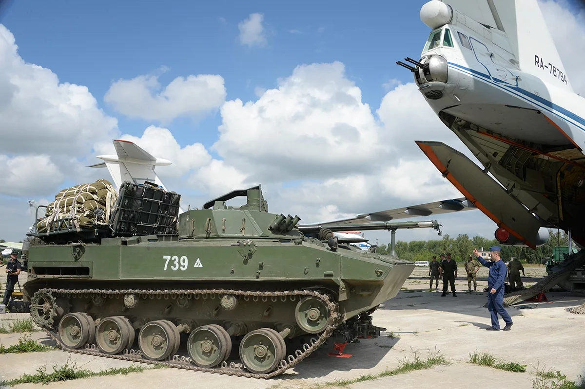
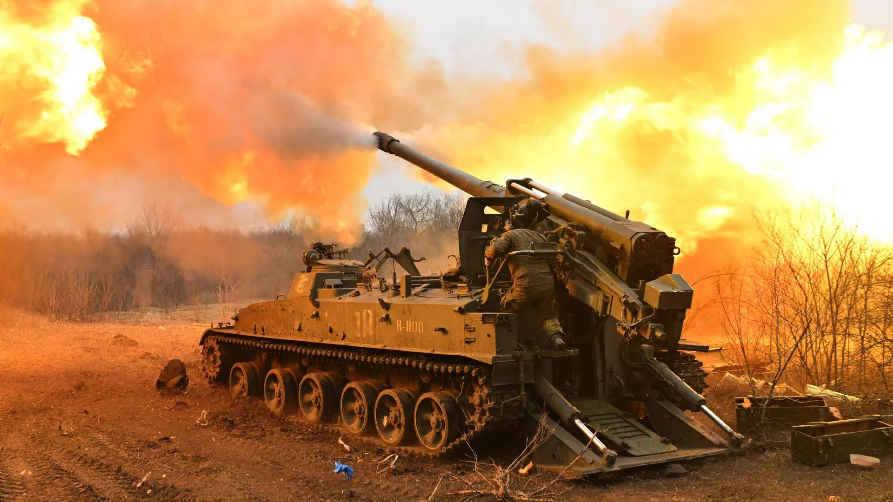
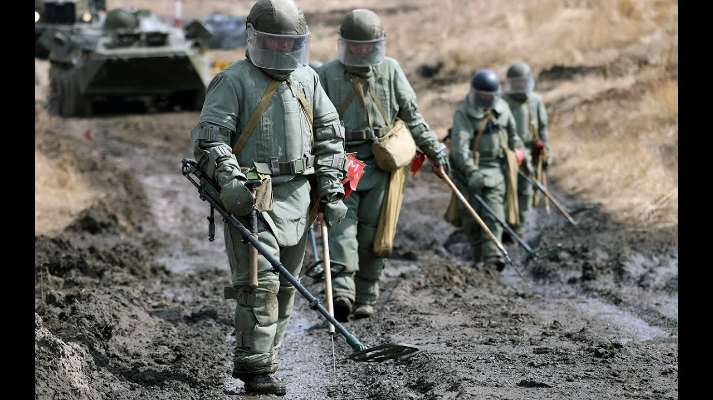
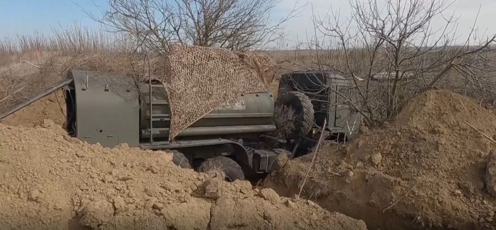
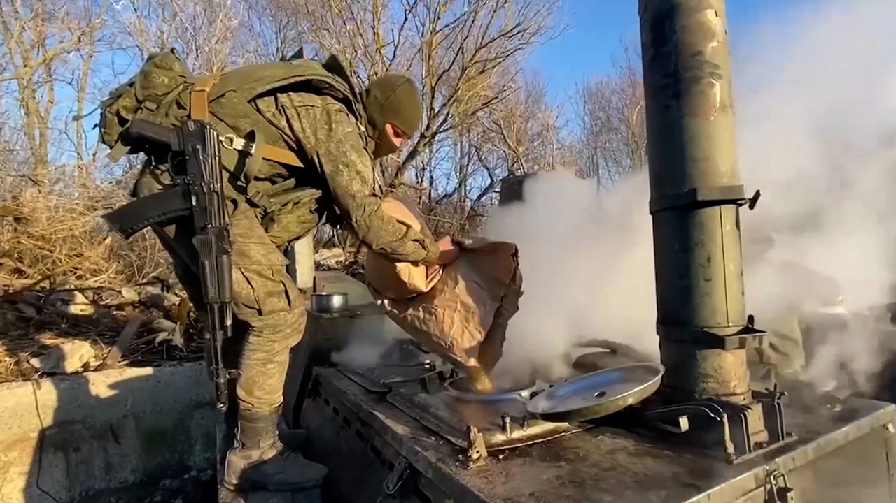

Служба по контракту в ВС РФ
Работа в армии по договору с Минобороны: условия, зарплата, порядок оформления в 2026. Рассказываем что нужно, сколько платят и как попасть в ПОВСК без очередей.
Бесплатный по России8 (800) 333-19-08Короткий номер*1450Служба по контракту в ВС РФ
Работа в армии по договору с Минобороны: условия, зарплата, порядок оформления в 2026. Рассказываем что нужно, сколько платят и как попасть в ПОВСК без очередей.
2 300 000 ₽
Единовременная выплата
210 000 ₽
Ежемесячное довольствие
50 000 ₽
Надбавка от Москвы
10 000 000 ₽
Списание задолженности
* Выплаты указаны для г. Москва. Суммы могут отличаться в зависимости от региона.
Что такое служба по контракту
Контрактная служба — это работа в армии по трудовому соглашению, которое гражданин сам подписывает с Минобороны. По сути, это такая же профессия, как врач или инженер, только место работы — воинская часть, а работодатель — государство. Человек приходит добровольно, получает зарплату (её называют денежным довольствием), ходит в отпуск, пользуется льготами. Срочная же служба — это обязанность: юношей от 18 до 30 лет призывают на год вне зависимости от желания.
Юридически всё оформлено тремя документами. Основной — ФЗ-53 от 28 марта 1998 года: там прописано кто, как и на каких условиях может служить. Второй — ФЗ-76 от 27 мая 1998 года: описывает права военного, размер выплат, социальные гарантии. Третий — Указ Президента №1237 1999 года: там указан сам порядок подписания и прекращения контракта. Все три документа регулярно обновляются, последние правки внесены в 2024–2025 годах.
После подписания контракта человек автоматически становится военнослужащим. Это даёт ему полный пакет: ежемесячную выплату, бесплатное медицинское обслуживание в госпиталях Минобороны, продовольственный паёк и форму, возможность получить собственное жильё через программу НИС, скидку 50% на коммунальные платежи, оплачиваемый проезд к месту отдыха и 30 календарных дней отпуска каждый год.
Кто может служить по контракту в 2026
Перед оформлением проверяют четыре параметра — возраст, паспорт, здоровье и биографию. Если по одному из них кандидат не проходит, контракт не подпишут. Ниже — что конкретно проверяют.
Возрастная рамка
Минимум — 18 лет. Максимум — 65 (до 2023-го потолок был 40, но после изменений в ФЗ-53 его подняли). Отдельно служить срочную перед контрактом не обязательно — первый раз можно идти сразу после 18-летия, если подходят по остальным пунктам.
Паспорт РФ
Нужен действующий российский паспорт. Двойное гражданство — тоже подходит, если второе не препятствует. Иностранцам путь другой: через подразделения Африканского корпуса или добровольческие формирования — там свой порядок приёма.
Заключение ВВК
Военно-врачебная комиссия выдаёт одну из пяти категорий. Подписать контракт можно с «А» (полная годность) или «Б» (есть мелкие ограничения — плоскостопие, слабое зрение и подобное). «В», «Г» и «Д» закрывают дорогу. У элитных подразделений вроде ВДВ планка выше — только «А».
Биография и документы
Непогашенных судимостей быть не должно. По образованию минимум — девятилетка (ОГЭ). На большинство рядовых должностей этого достаточно, для технических специальностей пригодится колледж или техникум, на офицерские — обязательно высшее образование.
Путь кандидата: от звонка до части за 7 шагов
Реальный порядок того, как происходит оформление — без приукрашивания. Весь процесс обычно укладывается в 14–45 дней: у кого-то быстрее (если документы под рукой и здоровье без нареканий), у кого-то дольше (если нужны дополнительные обследования или доставать военный билет).
Звонок или заявка на сайте
Начало пути — связаться с нами. Можно нажать кнопку «Записаться» выше или набрать *1450. Специалист ответит, уточнит первичные данные и подробно проконсультирует: какая выплата положена именно в вашем городе, к какой специальности вы подходите, какие документы понадобятся.
Сбор бумаг
Стандартный список: паспорт, военник (если есть), приписной бланк из военкомата, диплом или аттестат, СНИЛС, ИНН, справка из ЗАГС о семье и справка об отсутствии судимостей из МВД. Какие-то бумаги можно оформить через Госуслуги за 1–3 дня, другие — только лично. Куратор даёт точную инструкцию по каждому документу — где брать, сколько стоит, какие сроки.
Запись на приём в ПОВСК
Пункт отбора на контрактную службу — это отдельная структура в каждом регионе, куда нужно прийти лично. Сами вы записываетесь в общую очередь, иногда на 2–3 недели вперёд. Через нас — время согласовывается с конкретным офицером ПОВСК, обычно в пределах 3–5 рабочих дней. Если живёте далеко — подскажем как добраться.
Медкомиссия и психотест
В ПОВСК два ключевых этапа. Первый — обход врачей (терапевт, хирург, окулист, лор, невролог, психиатр, нарколог) с выдачей категории годности. Второй — профотбор: компьютерные тесты на логику, реакцию, стрессоустойчивость плюс беседа с психологом. По итогам определяется список ВУС, которые вам можно предложить.
Подпись контракта
Когда результаты комиссии готовы — подписывается сам контракт с Минобороны. Во время СВО минимальный срок — 1 год, может быть больше. В обычных условиях на выбор 2, 3, 5 или 10 лет. С момента подписи вы числитесь военнослужащим. Единовременная выплата (федеральная 400 000 ₽ + региональная часть) падает на карту обычно за 15–30 дней.
Учёбка
Перед отправкой в часть — курс боевой подготовки в учебном центре. Это занимает от двух недель для простых специальностей до 2–3 месяцев для техники, связи, БПЛА. На учёбке выдают форму, разгрузку, оружие — всё штатное. Пока вы там, куратор на связи: помогает семье разобраться с первыми выплатами и оформлением документов на детей.
Служба в части
После учёбки — распределение в действующее подразделение по вашей ВУС. Начинается обычная работа военного: выход на позиции, техника, связь, задачи командира. С первой смены начисляется денежное довольствие от 210 000 ₽/мес. Плюс — переводы семье (если подали заявление), социальные гарантии, право на жильё через НИС через 3 года службы.
Хотите начать оформление?
Бесплатная консультация — расскажем об условиях в вашем регионе и поможем собрать документы.
Куда можно пойти: должности и род войск
В армии около 30 направлений, куда набирают контрактников. Что именно подойдёт именно вам, показывает профессиональный психологический отбор в ПОВСК — тесты учитывают образование, опыт, физические и умственные способности. Вот самые востребованные на 2026 год:

Штурмовик по контракту на СВО — вакансии 2026
Должность: Штурмовик
Контракт штурмовиком на СВО: тактика ближнего боя, зачистка и удержание позиций. Довольствие от 210 000 ₽/мес, выплата от 400 000 ₽. Консультация бесплатно.

Служба ВДВ по контракту — вакансии на СВО 2026
Должность: Десантник
Служба ВДВ по контракту: десантно-штурмовые операции, повышенные требования к физподготовке. Вакансии, довольствие от 210 000 ₽/мес, выплата от 400 000 ₽. Узнать условия.

Оператор БПЛА по контракту на СВО — вакансии 2026
Должность: Оператор БПЛА
Оператор БПЛА на СВО по контракту: FPV-дроны, разведка, корректировка огня. Обучение с нуля, довольствие от 210 000 ₽/мес, выплата от 400 000 ₽. Узнать условия.

Артиллерия — служба по контракту на СВО, вакансии 2026
Должность: Артиллерист
Служба по контракту артиллеристом: гаубицы, РСЗО, миномёты. Вакансии в артиллерии на СВО, довольствие от 210 000 ₽/мес, выплата от 400 000 ₽. Узнать условия.

Связист и РЭБ по контракту на СВО — вакансии 2026
Должность: Связист
Контракт связистом или в РЭБ на СВО: радиостанции, средства радиоэлектронной борьбы. Довольствие от 210 000 ₽/мес, выплата от 400 000 ₽. Консультация бесплатно.

Экипажи бронетехники по контракту на СВО — вакансии 2026
Должность: Танкист
Контракт в экипаж танка или БМП: механик-водитель, наводчик-оператор, командир машины. Подготовка на месте, довольствие от 210 000 ₽/мес. Узнать условия.

Сапёр на СВО — вакансии по контракту 2026
Должность: Сапёр
Сапёры на СВО: вакансии инженера-сапёра по контракту. Разминирование, инженерная разведка. Довольствие от 210 000 ₽/мес, выплата от 400 000 ₽. Консультация бесплатно.

Медик по контракту на СВО — вакансии 2026
Должность: Санитар / Фельдшер
Контракт медиком на СВО: первая помощь, эвакуация раненых, медицинское сопровождение подразделений. Довольствие от 210 000 ₽/мес, выплата от 400 000 ₽. Узнать условия.

Снайпер по контракту на СВО — вакансии 2026
Должность: Снайпер
Снайпер на СВО по контракту: поражение целей на дальних дистанциях, разведка позиций. Довольствие от 210 000 ₽/мес, выплата от 400 000 ₽. Консультация бесплатно.

Водитель в армию по контракту на СВО — вакансии 2026
Должность: Водитель
Служба по контракту водителем: категории B, C, D, E, техника от УАЗов до КАМАЗов. Довольствие от 210 000 ₽/мес, выплата от 400 000 ₽. Консультация бесплатно.

Работа в тылу СВО — вакансии по контракту 2026
Должность: Тыловик
Вакансии в тылу СВО по контракту: снабжение, склады, топливо, продовольствие. Удалённо от ЛБС. Довольствие от 210 000 ₽/мес, выплата от 400 000 ₽. Узнать условия.

Повар по контракту в армии — вакансии на СВО 2026
Должность: Повар
Служба по контракту поваром в армии: полевые кухни, горячее питание подразделений. Довольствие от 210 000 ₽/мес, выплата от 400 000 ₽. Консультация бесплатно.
Сколько получают контрактники
Доход контрактника собирается из нескольких статей. Первая — крупная сумма при подписании, которую дают один раз. Вторая — стабильная ежемесячная зарплата, которая приходит каждое 10-е число. Третья — надбавки за участие в СВО. В совокупности получается заметно больше, чем кажется по одной базовой цифре.
| Тип выплаты | Сумма |
|---|---|
| Федеральная единовременная выплата | 400 000 ₽ |
| Региональная единовременная выплата | 100 000 – 4 100 000 ₽ |
| Базовое денежное довольствие | От 210 000 ₽/мес |
| Ежемесячная надбавка за участие в СВО | 158 000 ₽/мес |
| Ежедневная боевая надбавка | До 8 000 ₽/день |
* Региональная часть сильно различается. Например, в Москве к федеральным 400 тысячам добавляют ещё 1,9 млн — выходит 2,3 млн. В Чебоксарах ещё больше: там суммарная единовременная доходит до 3,5 млн. Надбавки за боевые задачи платят по приказам Министра обороны, обычно ежемесячно.


Три способа начать оформление
Позвонить
Самый быстрый путь. Звонок с любого оператора связи бесплатный. Куратор ответит в течение минуты, разберёт вашу ситуацию и объяснит что делать дальше.
Короткий номер*1450Узнать по региону
На сайте 120+ региональных страниц — конкретные суммы выплат, местные льготы, координаты ближайшего ПОВСК. Переходите в свой город, чтобы увидеть полную картину.
Написать в заявке
Если звонить неудобно — заполните форму внизу страницы. Оставляете имя, телефон, желаемое время — куратор сам перезвонит в удобный час и разберёт детали.
Статьи по теме
Все статьи
Батальон беспилотных систем в Чувашии — контракт и служба с земляками 2026
В Чувашии комплектуют батальон беспилотных систем 42-й гвардейской дивизии — из жителей республики, чтобы земляки служили вместе. Разбираем, кого берут, чем различаются четыре направления беспилотников (разведывательные БПЛА, FPV, барражирующие боеприпасы, наземные комплексы), чем беспилотные системы отличаются от специальности «оператор БПЛА», как устроено обучение под конкретную технику, что с категориями годности «В» и «Д» и какая выплата — **3 500 000 ₽** — действует при контракте в Чебоксарах.

Служба по контракту в 60-65 лет — возможности в 2026 году
После 60 лет служба по контракту реально возможна — вопрос в условиях. Разбираем семь ключевых тем: до какого возраста берут (**до 65 лет** — ст. 49 ФЗ-53 + ФЗ-269), какие должности доступны, что с категорией «В», как военная пенсия сочетается с довольствием (компенсация 100% по Указу №669/№554 + ПП №1385, пропорционально времени участия в СВО), какие выплаты (**2 300 000 ₽**), как работает страховка ФЗ-52 и статус ВБД. Решает не возраст, а ВВК, ВУС и вакансия.

Контракт СВО в Чебоксарах для мужчин 60+ — 3,5 млн ₽ + военная пенсия
Чувашия платит одну из самых крупных единовременных выплат в стране — **3 500 000 ₽** для граждан РФ и стран СНГ (3,1 млн регион + 400 000 федеральная), без возрастного ценза. Для мужчин 60-65 лет с военной выслугой это особенно выгодно: помимо выплаты — денежное довольствие и компенсация 100% приостановленной военной пенсии за выслугу лет (пропорционально времени участия в СВО). Разбираем, кому положены 3,5 млн, до какого возраста берут, как совмещаются пенсия и довольствие, ВВК после 60 и страховку ФЗ-52. Сумму и условия уточняйте на день подписания.

Механик-водитель бронетехники по контракту 2026
Механик-водитель — это не только про танк. За должностью стоит целое семейство брони: колёсные бронетранспортёры БТР-82А, гусеничные БМП и БМД, тягачи и инженерные машины. Разбираем, чем отличается вождение колёсной и гусеничной техники, почему водитель отвечает ещё и за десант, от чего зависит довольствие и что из военного опыта пригодится после службы.

Танкист по контракту в ВС РФ 2026
Танкист — это не одна профессия, а три роли в экипаже боевой машины: командир танка, наводчик-оператор и механик-водитель. Разбираем, кто чем занят внутри танка, какие требования проходит кандидат, как устроено обучение, от чего зависит денежное довольствие и как происходит распределение по частям — спокойно, по делу и без приукрашивания рисков.

Контракт после 50 лет: какие ограничения действуют в 2026 году и что проверить до поездки в пункт отбора
Разбираем без обещаний конкретной должности: до какого возраста заключают контракт, что реально проверяет военно-врачебная комиссия, как устроены выплаты в Чувашии для граждан РФ, стран СНГ и других иностранцев, что важно знать про военную пенсию и льготы ветерана боевых действий — и что стоит уточнить до поездки в пункт отбора.
Частые вопросы о службе по контракту
Если объяснять на пальцах — что вообще такое контракт в армии?
Представьте обычную работу: подписываете трудовой договор, получаете зарплату, отпуск, больничный, социальные гарантии. Контрактная служба устроена похожим образом, только договор подписывается с Минобороны на несколько лет. Работать придётся в составе Вооружённых сил — на должностях от рядового до офицера, в зависимости от опыта и образования. В отличие от призывников-срочников, которых забирают обязательно на год, контрактник идёт по своему выбору и получает за это полноценную зарплату.
Какие требования к кандидатам сейчас?
Проверяют по четырём пунктам: возрастной диапазон 18–65 (с 2023 года верхнюю границу подняли с 40 лет), гражданство РФ, здоровье — нужна категория «А» или «Б» по решению ВВК, отсутствие непогашенных судимостей. По образованию — минимум 9 классов хватит для стрелковых должностей. На техника или связиста удобнее со средним профессиональным, на офицера — только с высшим.
Какая зарплата у контрактника на самом деле?
Базовая часть собирается из двух окладов (по должности и по званию) плюс надбавок — за выслугу лет, за секретность, за классность специалиста. На бумаге базовый уровень стартует с 210 000 ₽ в месяц. К этому в рамках СВО добавляют фиксированные 158 000 ₽/мес плюс ежедневные боевые (примерно 8 000 ₽ за день в зоне боевых задач). В сумме у рядового состава выходит в среднем 280–350 тысяч в месяц, у сержантов и офицеров больше.
Сколько дают единоразово при подписании контракта?
Сумма собирается из двух частей. Первая — федеральная, её платят везде одинаково: 400 000 ₽ по Указу №787. Вторая — региональная, её размер определяет каждый субъект сам. В Москве региональная часть — 1,9 млн, итого 2,3 млн ₽. В Чебоксарах — 3,1 млн, суммарно 3,5 млн. В Санкт-Петербурге — 4,1 млн, итого 4,5 млн. Есть регионы с выплатой до 4 млн и выше. Весь список с актуальными цифрами — в разделе «Выплаты по регионам».
Можно ли подписать контракт на короткий срок?
В рамках СВО минимум — это один год. В стандартном режиме (когда спецоперация закончится) на выбор будут сроки 2, 3, 5 или 10 лет — каждый решает сам под свои задачи. Если хочется попробовать поработать — берут короткий контракт, по его истечении продлевают или уходят. Если сразу планируют карьеру — подписывают на 5–10 лет.
А если захочу уйти раньше срока?
Пока идёт СВО — досрочно уйти можно только в трёх случаях: серьёзное ухудшение здоровья с переводом в категорию «В» или «Д», окончание срока контракта, увольнение решением аттестационной комиссии. В обычное мирное время добавляются и другие поводы: семейные обстоятельства (уход за тяжело больным родственником, три и более детей), обвинительный приговор суда, системное нарушение условий со стороны работодателя.
А женщин берут на контракт?
Формально — да, по закону женщины могут служить, но есть ограничения по должностям: в боевые подразделения не направляют. Открыты медицинские специальности (санинструкторы, фельдшеры, врачи), связь, штабная работа, делопроизводство, тыл, кинология. В 2026 году фактический набор женщин по ряду регионов приостановлен или крайне ограничен — актуальную ситуацию узнавайте в конкретном ПОВСК.
Какие есть льготы у военных по контракту?
Пакет довольно обширный. Самая заметная льгота — жильё через НИС: после трёх лет службы накапливается сумма на квартиру, которая идёт первоначальным взносом. Дальше — медицина бесплатно во всех госпиталях Минобороны, 30 дней отпуска с компенсацией проезда туда-обратно, минус 50% от коммуналки, бесплатное питание или паёк, вещевое довольствие (форма). Участникам СВО — списание ранее взятых кредитов до 10 млн ₽ по ФЗ-391, транспортный налог не платится в большинстве регионов.
Нужно ли что-то уметь заранее?
Отслужившим срочную проще — их берут охотнее, есть базовые навыки. Но без армейского опыта путь тоже открыт. После подписания контракта всех отправляют в учебный центр на боевое слаживание: 10–14 дней для простых должностей, 1–2 месяца для связистов и механиков, до 3 месяцев для операторов БПЛА или медиков. Там дают всё с нуля — от обращения с оружием до специализации.
Как попасть в пункт отбора?
Проще всего через наш сервис. Позвоните *1450 или оставьте заявку — куратор узнает ваш регион, согласует конкретное время в ПОВСК с офицером, подскажет какие документы принести. Вы приходите без очередей, вас уже ждут. Без посредника придётся записываться в общую очередь, иногда ждать 2–3 недели.
Только исполнилось 18 — уже можно?
Да, юридически ограничений нет — с 18 лет на первый контракт берут. Но в реальности если у парня ни армейского опыта, ни профильной подготовки, предложат только базовые должности. Если хочется пойти на технику, связь, БПЛА — нужно либо профильное образование, либо стажировка на гражданке. Лучший вариант для 18-летних без опыта — сначала проконсультироваться о том, какие ВУС для них доступны.
Что за «ВУС» и откуда она берётся?
ВУС — это военно-учётная специальность, та самая должность, на которую вас возьмут. Определяется на ПОВСК по результатам психотестов, вашему образованию, гражданскому опыту и потребностям армии в данный момент. В 2026 году самые востребованные ВУС — операторы БПЛА/FPV, штурмовики, водители, связисты, артиллеристы, медики. Можно самому предложить желаемую специальность, но финальное слово остаётся за отборочной комиссией.
А что будет после того, как контракт закончится?
Человек получает «дембельские» — от двух до семи окладов (зависит от выслуги). Если проходил СВО — сохраняет статус ветерана боевых действий со всеми льготами на всю жизнь. Если выслужил 10+ лет — остаётся право использовать НИС для жилья. Плюс общие льготы ветерана: в пенсионном возрасте — военная пенсия, которая идёт параллельно с гражданской. Можно продлить контракт на новый срок — это частый выбор.
Все услуги бесплатны для кандидата
Весь процесс оформления контракта структурирован и прозрачен. Мы не взимаем никаких денежных средств — ни за консультацию, ни за сопровождение документов, ни за направление в воинскую часть.
Расходы на проезд до пункта отбора (ПОВСК) компенсируются.

Записаться на службу по контракту
Заполните форму — специалист свяжется с вами